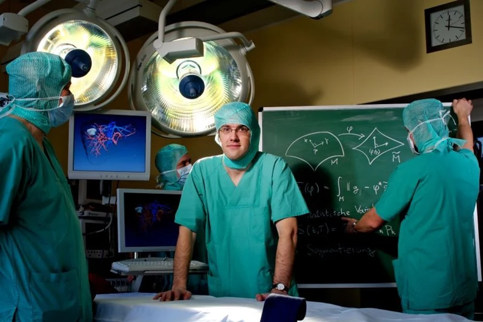
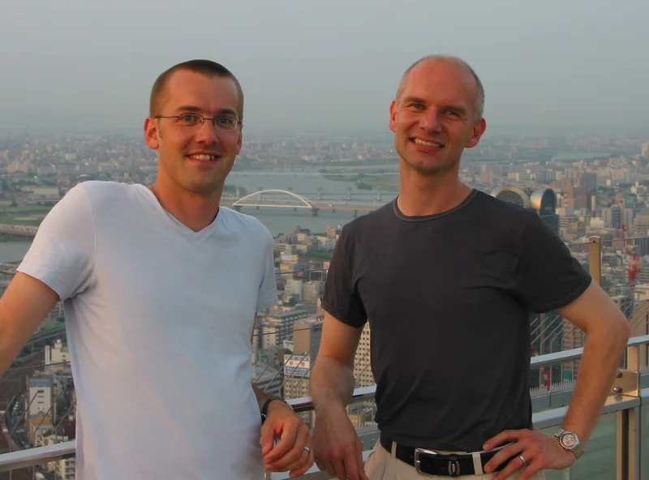
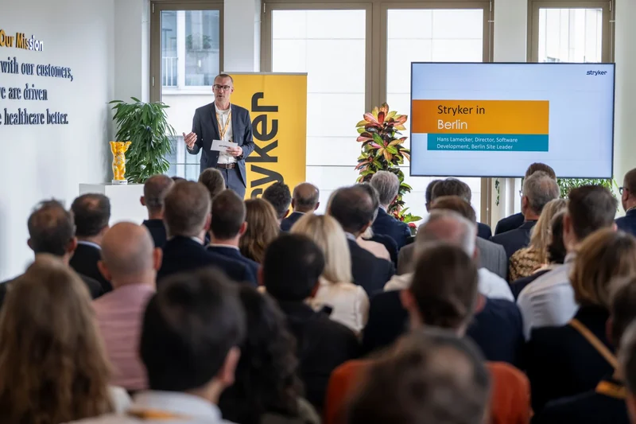

01
Exploring possibilities
Science
and technology
Which new possibilities are emerging – and how can we turn them into useful solutions?
Scientist · Entrepreneur · Leader
I’m interested in the moments when things are still taking shape – and in the people I can explore those possibilities with.
What drives meWhere it begins
A product, a business idea or a new project: it all begins with possibilities and open questions.
What is needed? What can technology contribute? And how do we bring together the people who can make it happen?
These questions have followed me throughout my career – from science, through entrepreneurship, to my current role as a technical leader in medical technology.
My work focuses on developing scalable, patient-specific solutions and helping people and organisations build the capabilities they need to deliver them.
What I explore
Exploring possibilities
Which new possibilities are emerging – and how can we turn them into useful solutions?
Understanding value
What is needed? Who benefits? What consequences might follow? How can a viable offering take shape?
Making things happen together
How can people work effectively together, and what conditions make that possible?
My journey
As a scientist, as an entrepreneur and in my work today.

Staying curious
As a scientist, I investigated and tested new approaches. I wanted to understand what they might make possible – and how to find out whether an idea really held up.
That meant testing assumptions, questioning results and understanding the limits of an approach. The most exciting moments came when a finding began to suggest a new application.
What could others do with it?
What problem could it solve?
That scientific mindset stays with me: remaining curious, looking closely and changing my mind when the evidence calls for it.

Taking the next step
Becoming an entrepreneur brought a different set of questions to the fore: Who needs our results? How do we develop them into something useful in everyday practice? And how can we build a business around them?
Together with others, I turned research findings into a viable service. That meant bringing together technical possibilities, our customers’ needs and our ability to deliver reliably.
A solution takes shape through dialogue with the people who use it and those who make it possible.
That transition broadened my perspective. I’m still interested in how that collaboration can create something that lasts.

Enabling people to act together
The integration of my company into a larger organisation marked a new phase for the service. How could we offer it at greater scale? What needed to stay, and what needed a new form?
My focus shifted towards the conditions that make working together possible: developing technical foundations, connecting knowledge, clarifying responsibilities and enabling decisions.
Moving concrete projects forward while building the capabilities we will need over the long term.
These questions shape my work today as a technical leader in medical technology. I work with others to build an organisation in which people can reliably develop and improve patient-specific solutions.
Let’s talk
A question. A project.
An idea that is still taking shape.
Are you thinking about similar questions – in your work, a project or a business idea? I’d enjoy hearing about your perspective and ideas, learning from each other and exploring what might come next.
Let’s talk about it.
Connect on LinkedIn